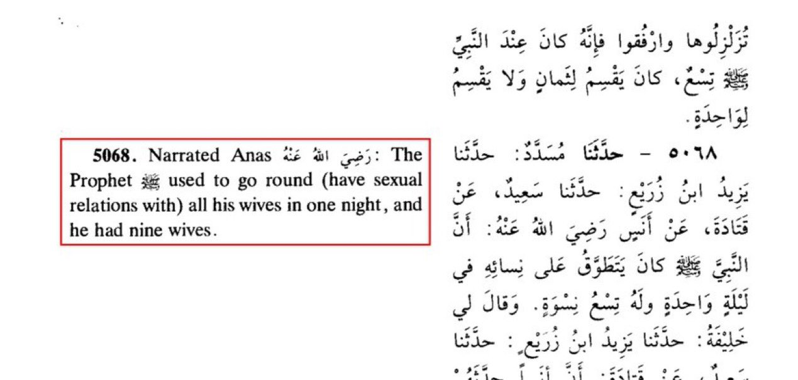
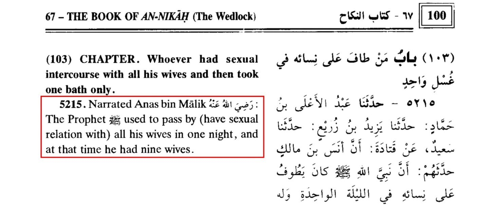
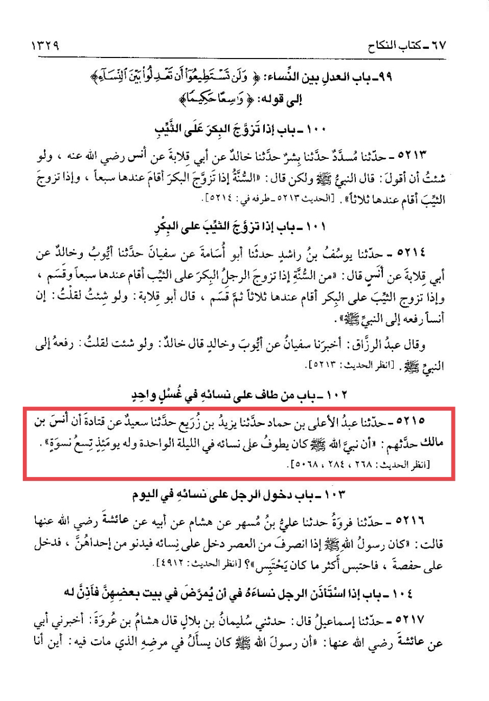
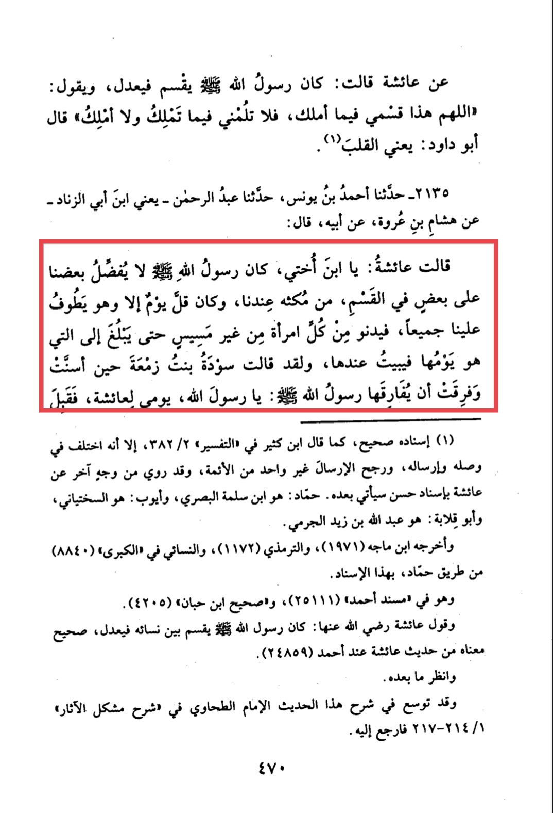
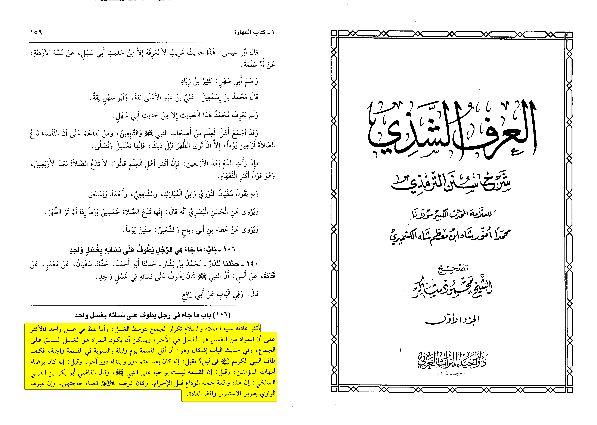

This is a hadith none Muslims use to say the prophet lusting too much.What does the hadith mean by this?
Firstly let’s get this straight.
The Hadiths says only this.
Translation:
[“The Prophet used to visit all his wives in one night, and he had nine wives.” ] it doenst mentioned
he had sexual relations with his wife’s in one night.

Now does him spending a night with his wife’s imply they had intercourse? No it doenst ,
we can see his wife’s testify to this that it doenst mean they had such things.

Narrated Hisham b. 'Urwah:
On the authority of his father that 'Aishah said: O my nephew, the Messenger of Allah (ﷺ)
did not prefer one of us to the other in respect of his division of the time of his staying with us.
It was very rare that he did not visit us any day (i.e. he visited all of us every day). He would come
near each of his wives without having intercourse.
Another problem with this, would be that. You would have to show a problem with a person having
sexual relations with his wife’s. There is nothing wrong with a man and his wife wife’s doing anything like this.
Source: Sunan abi dawud 2135
Grade: Hassan Sahih (Authentic) (Al-Albani)
Al-Kashmiri writes:
"One of his habits (PBUH) repeating intercourse with the existence of ghusl.
As for the saying in one ghusl the majority of the scholars see the meaning as
the ghusl at the end (not that he only takes one ghusl)... And in the hadith there
is a doubt that is answered by abu bakr ibn arabi al-maliki that this only happened
once in the last ceremony before ihram and his wisdom (PBUH) is to finish all their
needs (as he won't see them for a time) and even if the narrator explained it by tikrar (repetition)"
[Al-'Urf Al-Shazi volume 1, pg 159]
